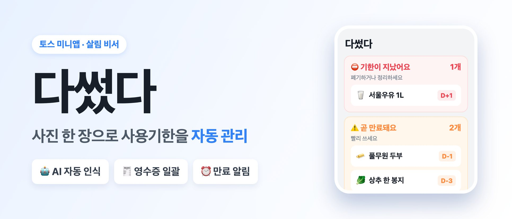

SNAP · CHECK · USE UP
찍기만 하면,
기한은 알아서.
다썼다는 집에 있는 물건이나 영수증을 찍으면 AI가 품목·카테고리·사용기한을 채워 주는 생활 관리 앱입니다. 기한이 가까운 물건부터 먼저 보여 드려요.
토스 앱에서 바로 · 설치 없이

이렇게 써요
찍고, 확인하고, 다 쓰면 기록해요.
일일이 적지 않아도 괜찮아요. 사진 한 장으로 담고, 다 쓰거나 버린 물건은 기록으로 남겨요.
-
사진으로 담기
물건을 찍거나 영수증을 스캔하거나 앨범에서 사진을 골라요. 영수증은 여러 품목을 한 번에 읽어요.
-
확인하고 저장
AI가 채운 품목·카테고리·사용기한·수량·금액을 확인하고, 다르면 그 자리에서 고쳐요.
-
다 쓰면 기록
「다 썼어요」나 「버렸어요」를 누르면 기록으로 옮겨지고, 이번 달 쓴 돈과 버린 돈이 모여요.
알아 두면 좋아요
가입 없이 시작하는
우리 집 기한 노트
따로 회원가입을 하지 않아도 모든 기능을 쓸 수 있어요. 토스 앱에서는 토스 계정으로 연결되고, 연결되지 않으면 게스트로 이어서 이용합니다. 등록한 물건 정보는 기기와 서비스 서버에 함께 저장돼요.
찍은 사진은 품목과 기한을 알아보기 위해 서버로 보내 AI로 분석합니다. 사진·데이터 처리와 광고에 관한 자세한 내용은 앱 안 개인정보 처리방침에서 확인해 주세요.
- 분류
- 라이프·AI · 생활·편의 · AI
- 출시 채널
- 앱인토스
개인정보처리방침과 이용약관은 앱이 출시된 스토어의 앱 정보와 앱 안에서 확인할 수 있습니다.
궁금할 때 먼저 보기
자주 묻는 질문
무료인가요? 광고가 나오나요?
무료로 이용할 수 있고, 보관 중인 물건은 500개까지 담을 수 있어요. 다 쓰거나 버린 물건은 이 개수에 들어가지 않으며, 한도가 차면 광고를 끝까지 보고 5개씩 더 담을 수 있어요. 홈 화면 아래와 사진 분석 중 화면에 배너 광고가 나오고, 화면 전체를 덮는 전면 광고는 없어요.
사용기한은 어떻게 정해지나요?
사진에서 포장에 적힌 날짜를 읽으면 그 날짜를 써요. 읽지 못하면 식품·화장품·약·생활용품·기타 카테고리와 개봉 여부에 따라 보통 기간으로 추정하고, 날짜는 직접 고칠 수 있어요.
영수증 한 장으로 여러 물건을 담을 수 있나요?
네. 영수증을 찍으면 여러 품목을 한 번에 읽어 와요. 담을 항목을 골라 체크하고, 수량과 금액도 그 자리에서 고칠 수 있어요.
기한이 다가오면 알림을 받을 수 있나요?
지금은 푸시 알림을 보내지 않아요. 대신 앱을 열면 홈에서 「기한이 지났어요」 「곧 만료돼요」 항목을 먼저 보여 드려요.
AI가 잘못 알아보면 어떻게 하나요?
확인 화면에서 품목·카테고리·사용기한을 직접 고친 뒤 저장하면 돼요. 확신이 낮은 결과에는 「확인이 필요해요」가 표시되고, 알아보지 못하면 직접 입력하거나 다시 찍을 수 있어요.
내 데이터를 지울 수 있나요?
설정의 「내 데이터 전체 삭제」를 누르면 서버의 물건·기록·변경 이력과 이 기기의 저장 내용이 모두 지워져요. 삭제한 데이터는 되돌릴 수 없어요.
도움이 필요할 때
문의 안내
앱 이용에 관한 궁금한 점이나 도움이 필요한 내용을 이메일로 보내 주세요.